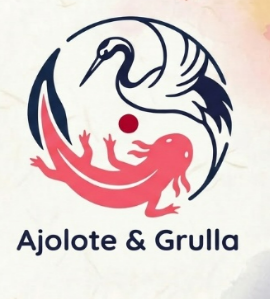

E-Commerce "Ajolote & Grulla"
Frontend Pastel Japonés · Scrum · Git/GitHub PRs
Tienda en línea de papelería japonesa con estética pastel minimalista, catálogo interactivo, vistas responsivas y control de versiones colaborativo mediante ramas y Pull Requests.